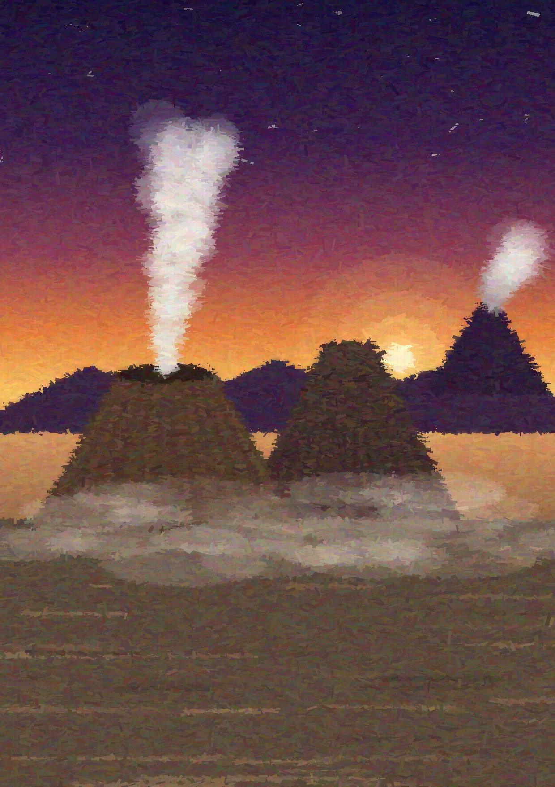
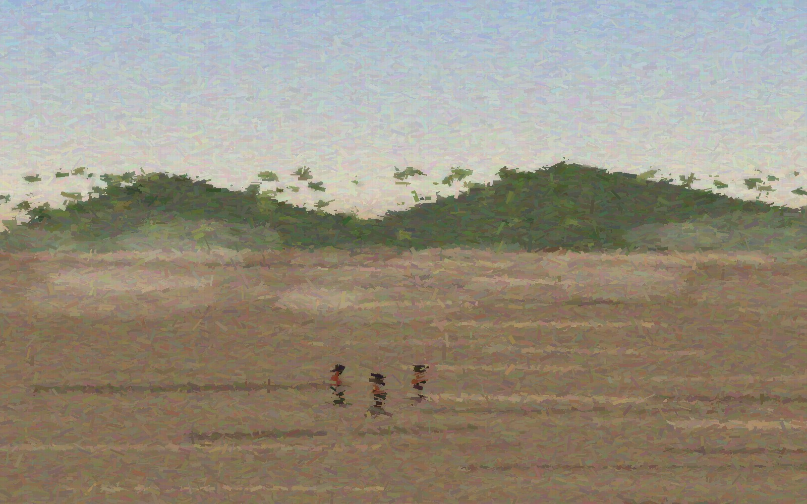
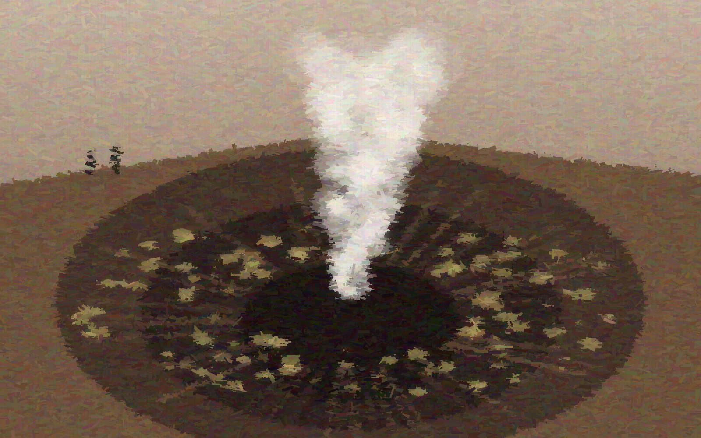
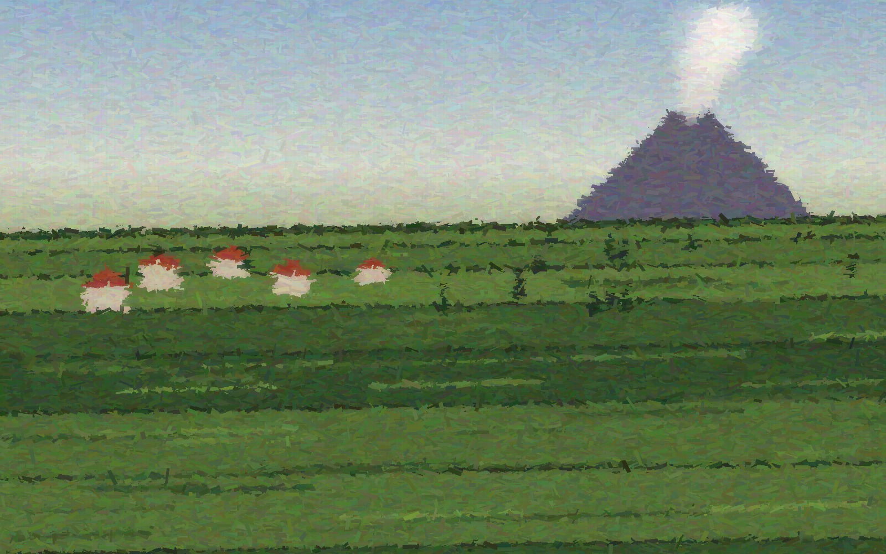

本报告基于考察组于二〇二六年五月十八日至二十四日在印度尼西亚东爪哇省庞越（Probolinggo）地区开展的为期七天的田野调查。调查范围涵盖腾格尔（Tengger）破火山口及其内部的布罗莫（Bromo）活动火山锥、腾格尔沙海（Laut Pasir），以及火山口缘的山地村落塞莫罗拉旺（Cemoro Lawang）。考察组沿"海岸平原—山地村落—破火山口—活动火口"的剖面线，对区域地质构造、火山活动迹象、地貌形态、灾害风险与腾格尔人的生计方式进行了观察与记录，并就火山旅游与防灾管理提出初步建议。
关键词：庞越 布罗莫火山 腾格尔破火山口 沙海 田野调查 火山灾害 腾格尔人
| 项 目 | 内 容 |
|---|---|
| 调查时间 | 2026 年 5 月 18 日 — 5 月 24 日（共 7 日） |
| 调查区域 | 东爪哇省庞越市及庞越县苏卡普拉（Sukapura）一带，腾格尔破火山口内外 |
| 调查对象 | 布罗莫火山及腾格尔火山群、沙海地貌、火山监测设施、腾格尔人村落 |
| 调查方法 | 路线踏勘、定点观测、访谈记录、写生与摄影、文献比对 |
| 队伍构成 | 火山地质组 3 人，人文地理组 2 人，向导及后勤 2 人 |
庞越（Probolinggo，旧译"普罗博林戈"）位于印度尼西亚东爪哇省北岸，北临马都拉海峡，南倚腾格尔火山高地。当地素以"风、葡萄与芒果之城"自况：旱季自山地灌下的"根丁风"（Angin Gending）干燥强劲，沿海平原则盛产芒果与葡萄。城市本身是爪哇北岸传统的港口与农产集散地，而其腹地——庞越县的山区——正是本次调查的主角：腾格尔火山群。
自海岸向南，地势在数十公里内由海平面急升至两千余米。我们的调查路线由庞越市出发，经通萨斯（Tongas）与苏卡普拉山道盘旋而上，至火山口缘村落塞莫罗拉旺（Cemoro Lawang，海拔约 2,200 米）设立营地，再下行进入破火山口内部。沿途植被由滨海椰林、旱作田园渐变为山地菜园与木麻黄疏林，垂直分带清晰，是一条理想的自然地理剖面。
布罗莫—腾格尔—塞梅鲁一带于 1982 年划设为国家公园；其中的沙海早在 1919 年即被殖民时期当局列为保护地，是印尼最早受保护的自然景观之一。
腾格尔火山群属巽他岛弧的一部分，系印度—澳大利亚板块向欧亚板块俯冲的产物。该区火山活动历史悠久，古腾格尔火山的喷发记录可上溯至约八十二万年前。古火山经多期猛烈喷发与塌陷，形成今日直径约十公里、近于圆形的腾格尔破火山口；口内平铺火山灰与火山砂，即著名的"沙海"。
破火山口内发育五座后生火山锥：布罗莫（Bromo，2,329 米）、巴托克（Batok，约 2,440 米）、库尔西（Kursi）、瓦塘安（Watangan）与维多达连（Widodaren）。其中唯有布罗莫至今活动频繁——其名源自梵语"梵天"（Brahma），自十九世纪初有记录以来喷发逾五十次，为爪哇岛最活跃的火山之一。破火山口以南约二十公里处，耸立着爪哇最高峰塞梅鲁火山（Semeru，3,676 米），常年间歇性喷烟，与布罗莫遥相呼应。
| 年份 | 活动概况 |
|---|---|
| 2004 | 突发性爆炸式喷发，火口附近落石致 2 名游客罹难，引发对游览安全距离的检讨 |
| 2010 — 2011 | 持续性灰喷发，火山灰影响周边县市并一度干扰区域航空运输 |
| 2015 — 2016 | 长时间喷灰与火山震颤，警戒级别多次上调，沙海局部封闭 |
| 2019 | 间歇性喷发与灰柱，火口周边设 1 公里禁入区 |
本次调查期间，布罗莫处于低强度喷气状态：火口持续释放白色蒸汽，偶夹淡硫味，未见喷灰。考察组在沙海北缘记录到轻微的地面震颤感两次，均与监测站公布的浅源火山性地震时段吻合。

沙海是本区最具特色的地貌单元：一片近乎水平的火山碎屑平原，环抱诸火山锥，当地人称之为"Segara Wedi"（爪哇语"沙之海"）。其物质主要为布罗莫历次喷发降落的火山灰、火山砂与火山砾，经雨季流水的再搬运而趋于平整。地表广布风成波痕与车辙状冲沟，旱季尘暴时能见度可骤降至数十米。
我们沿沙海北缘布设了三处观察点，记录到如下现象：

五月二十一日上午，经监测部门确认警戒级别处于低位后，考察组沿西北侧阶梯登上布罗莫火口缘。火口呈漏斗状，缘部直径约八百米，内壁陡峻，发育密集的辐射状冲沟；近底部见黄白色硫华沿裂隙呈环带分布。火口中央持续上升白色蒸汽柱，伴有低沉的间歇性轰鸣，俯身可感热气拂面，硫化氢气味明显。
| 观测项目 | 记录值 / 描述 |
|---|---|
| 火口缘海拔（手持 GPS） | 约 2,320 — 2,330 米 |
| 喷气柱高度（目估） | 约 150 — 400 米，随风向摆动 |
| 喷气颜色与气味 | 白色为主，偶呈灰白；硫味轻至中等 |
| 声响 | 持续嘶鸣夹间歇低鸣，约数分钟一次 |
| 口缘游客密度（上午八时） | 每百米栈道约 20 — 40 人，集中于阶梯顶端 |
值得注意的是，口缘仅一侧设有护栏，且警示标识多为印尼文与英文。结合 2004 年伤亡教训，建议增设多语种警示与应急避险指示。
布罗莫由印尼火山与地质灾害减灾中心（PVMBG）下属的火山观测站全天候监测，手段包括地震计网络、形变测量、可视监控与气体观测。印尼现行火山警戒分四级：一级"正常"（Normal）、二级"留意"（Waspada）、三级"戒备"（Siaga）、四级"危险"（Awas）；调查期间布罗莫维持低警戒级别，火口周边建议安全半径为一公里。
综合本次踏勘，主要灾害风险可归纳为：
环破火山口而居的腾格尔人（Tengger）约有十万之众，是爪哇岛上少数至今信奉印度教的族群，自认满者伯夷王朝遗民之后。他们视布罗莫为圣山：每年卡萨达祭典（Yadnya Kasada）时，村民列队穿越沙海，登上火口缘，将蔬果、家禽乃至牲畜投入火口，献祭山神，祈求丰收平安。沙海中央的波坦圣庙（Pura Luhur Poten）是祭典的起点，黑色火山岩砌成的庙身与灰色沙海浑然一体。

腾格尔人的生计高度依赖火山的馈赠。火山灰风化而成的肥沃土壤，使海拔两千米以上的坡地得以精耕：马铃薯、卷心菜与大葱是三大主栽作物，田块沿陡坡层层叠升，几无闲地。近数十年旅游业兴起，吉普车接驳、马匹租赁与民宿经营成为重要副业；访谈中多位村民表示，"火山喷发时游客绝迹，菜价便是全家的指望"——火山既是风险之源，亦是生计之本，这种双重性构成当地人地关系的核心。
庞越腹地的布罗莫—腾格尔火山区，是自然过程与人类活动高度耦合的典型样区：破火山口、活动火口与沙海构成完整而紧凑的火山地貌博物馆；腾格尔人的信仰、农耕与旅游经济，则与火山活动节律深度交织。基于本次调查，提出如下建议：
| 日期 | 行程 | 主要工作 |
|---|---|---|
| 5 月 18 日 | 庞越市 — 苏卡普拉 | 海岸平原与山麓带踏勘，访问县属农业站 |
| 5 月 19 日 | 塞莫罗拉旺 | 口缘营地设立，村落访谈与民宿经济调查 |
| 5 月 20 日 | 佩南贾坎 — 沙海北缘 | 黎明云海观测，沙海剖面与灰层记录，油画写生 |
| 5 月 21 日 | 布罗莫火口缘 | 火口近距观测，喷气与声响记录，游客密度统计 |
| 5 月 22 日 | 沙海南部 — 波坦圣庙 | 圣庙建筑记录，卡萨达祭典口述史访谈 |
| 5 月 23 日 | 口缘东侧菜园带 | 高地农业样方调查，土壤与作物记录 |
| 5 月 24 日 | 下撤庞越市 | 资料整理，与火山观测站交流监测数据 |
火山地质与人文环境联合考察组 谨识
二〇二六年六月 · 庞越